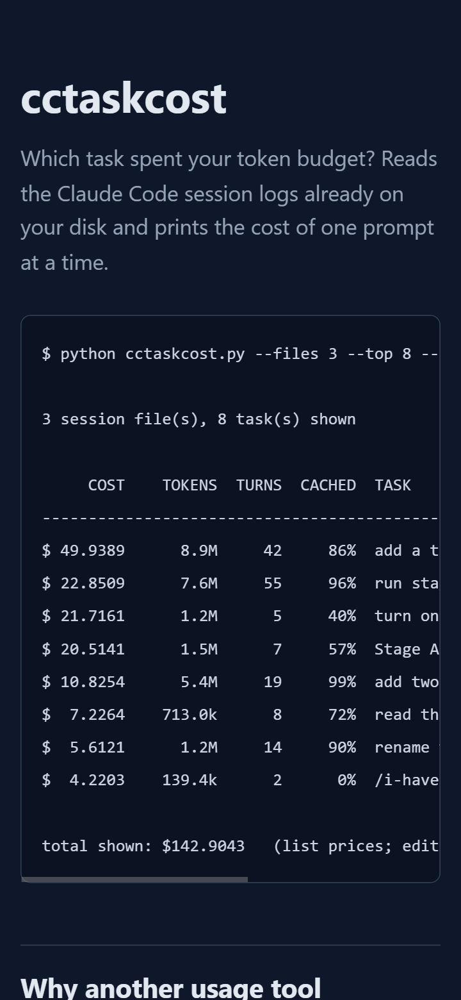
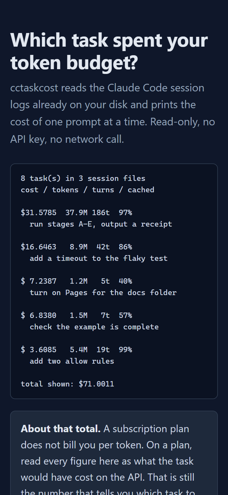

cctaskcost / how this was built
Five stages, three skill pairs, one tool
This repository was built by stacking open-source Claude Code skills in pairs, following Eric Michaud's video. Each stage below shows the skills that ran, the artifact the stage left in the repository, and what it passed to the next stage. Every figure links back to the receipt, the command-by-command record of the run on 2026-09-26.
The chain at a glance
- A Compression Headroom + I Have ADHD Stays on under every later stage. Headroom cuts what goes into the model; I Have ADHD cuts what comes out.
- B Research Last30Days + Agent Reach Passes to C: the gap (per prompt cost, zero existing repos), the users' exact words, and the reason for the CACHED column.
- C Build no skill pair Passes to D: the first landing page, 101 lines, as the target of the design review.
- D Design Impeccable + Taste Critique, then DESIGN.md, then rebuild, then a second check. Passes to E: a page that fits a 360px phone.
- E Publish no skill pair Push, GitHub Pages build, and the receipt.
Three of the five stages used a skill pair. Stages C and E are ordinary work: write the
code, push it. A seventh skill, claude-api, entered the chain after Stage D to
check the price table. It is shown under Stage D because it changed every figure on the page.
Stage A: turn on the compression pair
Claude Code was started through the Headroom proxy, and /i-have-adhd was the
first message of the session.
HEADROOM_TPM=2000000 headroom wrap claude --1m
/i-have-adhdEvidence
The proxy's own counters, read with curl -s http://127.0.0.1:8787/stats.
| field | at Stage A | later, 2026-09-26 07:50 |
|---|---|---|
| rate-limit refusals by Headroom | 0 | 0 |
| rate-limit refusals by upstream | 1 | 1 |
| tokens per minute limit | 2,000,000 | 2,000,000 |
| lifetime requests | 132 | 430 |
| lifetime tokens saved | 105,809 | 646,985 |
| this proxy session: tokens removed | not recorded | 544,120 of 37,113,829 (1.5%) |
| this proxy session: cost with / without | not recorded | $39.23 / $44.42, saved $5.19 |
The later column includes the work of building this page. Compression removed 1.5% of the input tokens. Headroom reports the dollar saving as 11.7%; this page does not re-derive how Headroom prices the removed tokens.
The cost of Stage A. On 2026-09-25 the same setup stalled. Headroom's default limit is 100,000 tokens per minute, and it counts the whole uncompressed conversation, so once the conversation passed 100,000 tokens every request was refused. Raising the limit to 2,000,000 is the fix. The count of Headroom refusals above is 0 because of that fix.
I Have ADHD, measured by the tool it helped build
The finished tool can price its own build. Two rows from the real run:
cost / tokens / turns / cached
$31.5785 37.9M 186t 97%
run stages A-E, output a receipt
$ 1.4068 139.4k 2t 0%
/i-have-adhdThe whole A to E run was one prompt, so it is one row. The tool cannot split $31.5785 by stage. Figures are list prices; a subscription plan does not bill per token.
Passes to every later stage: compression stays on. Every request of stages B to E went through the Headroom proxy, and I Have ADHD kept each report to numbered actions.
Stage B: find the problem
Two tools, one wide and one deep. Last30Days scans six sources for what people talk about. Agent Reach then reads one platform through the logged-in browser session.
Step 1: wide scan, Last30Days v3.18.4
Run on 2026-09-25 and reused on 2026-09-26, not re-run. Topic: AI coding agents, token cost and context limits.
| source | items | engagement |
|---|---|---|
| 35 | 6,973 upvotes, 2,210 comments | |
| Hacker News | 25 | |
| GitHub | 21 | 235 reactions, 559 comments |
| X | 17 | 674 likes |
| Digg | 11 | |
| Techmeme | 8 | |
| arXiv | 0 | timed out after 30s |
| Polymarket, YouTube | 0 | no results |
| total | 117 | window 2026-08-27 to 2026-09-26 |
The top cluster was a pull request that compares one agent turn at 18M tokens with the same task at 1.5M. The raw scan is not in the repository, because it is other people's post text; the findings and links are.
Step 2: deep fetch, Agent Reach
opencli reddit search "Claude Code token usage per task cost" -f md --limit 25 # 25 rows
opencli reddit search "which task used my tokens Claude Code" -f md --limit 25 # 25 rows
opencli reddit search "ccusage token cost tracking Claude Code" -f md --limit 25 # 25 rows
opencli twitter search "Claude Code token cost per task" -f md --limit 20 # 20 rows95 rows, no platform failed. What came back, in the users' own words:
Per-turn token and cost tracking for Claude Code
(r/ClaudeCode)one 58-minute task showed $34.38 cost on $20/month Pro plan
(r/ClaudeCode)60-90% token-saving claims didn't hold up
, 41 points, reposted to r/LLMDevs, r/codex and r/ClaudeAI (r/ClaudeCode)
Step 3: does a tool already do this?
| GitHub search | repositories |
|---|---|
claude code token usage cost | 15; the top 7 checked, each a session, day or live monitor |
claude code session cost per task | 0 |
claude code per prompt token attribution | 0 |
claude code compare token savings before after | 0 |
Keyword search that returns zero is weak evidence alone. With the 7 closest tools, which all total a session, a day or a 5-hour block, it is enough to decide.
Artifact: research/notes.md,
with the counts, the seven closest repositories and every link.
Passes to Stage C:
- The three zero-result searches: build cost per prompt, not per session.
- The "60-90% claims didn't hold up" thread: add a
CACHEDcolumn, so a saving claim can be checked. - The users' exact phrases: they became the quotes section of the landing page.
Stage C: build the tool
No skill pair. The repository was created with gh repo create. Before any
code, one real session log was read to confirm the format the whole tool depends on:
| record | carries promptId | carries usage |
|---|---|---|
| user, your prompt | yes | no |
| user, a tool result | yes, the same one | no |
| assistant | no | yes |
Then cctaskcost.py: one file, standard library only, 348 lines, with a
self-check.
$ python cctaskcost.py demo
demo: okArtifacts, commit 278db0b:
cctaskcost.py,
README.md,
and the first docs/index.html.
Passes to Stage D: the first landing page, 101 lines, as the target of the design review. Its first screen on a phone is the left image under Stage D.
Stage D: audit, style, check again
Impeccable finds what is wrong with the layout. Taste sets the visual system. Impeccable then checks the result. Eric's split, in his words: Impeccable "for auditing" and Taste "for actually putting together the design".

pre block
is 326px wide and its content 602px: 46% of each line hidden, and the hidden part is the
TASK column. (Figures here are from the old price table.)
Both screenshots were taken for this page with Chrome viewport emulation at 360 x 780, and both measurements were read from the live DOM at the same time.
Step 4: Impeccable critique, two isolated reviewers
Assessment A, a design review, scored the first page against Nielsen's heuristics: 20 of 36. The lowest scores:
| # | heuristic | score | cause |
|---|---|---|---|
| 9 | Error recovery | 1 / 4 | no failure state shown anywhere |
| 3 | User control | 2 / 4 | no navigation, one exit link |
| 4 | Consistency | 2 / 4 | hero and install ran different commands |
| 5 | Error prevention | 2 / 4 | six words of reassurance for "run this on your logs" |
| 6 | Recognition over recall | 2 / 4 | four flags used, none explained |
| 10 | Help and documentation | 2 / 4 | documents half of the README |
Assessment B ran the deterministic detector and a browser:
$ impeccable detect --json docs/index.html
exit 0, 1 finding: em-dash-overuse (advisory) "39 em-dashes in body text"A false positive, reconstructed exactly: 32 from one ASCII rule line inside the terminal
block, 4 from CLI flags, 3 real — in prose. The rule's own minimum is
8. The 3 real ones were removed anyway.
Step 5: Taste writes the design system
design-taste-frontend wrote
DESIGN.md:
dark terminal, native CSS, one teal accent, orange only on dollar figures, one 8px radius,
dials VARIANCE 6 / MOTION 3 / DENSITY 5. It turned the critique into eight
changes, the first being the two hero blocks swapped at 620px that you see above.
Step 6: Impeccable checks again
The second detector run found one real problem the first version did not have:
side-tab, severity warning, a 3px left border on a rounded card, which the
detector names the most recognisable sign of AI-generated UI. It was removed. A manual
measurement then found the inline log path pushed the page 31px wider than a 360px phone;
fixed with overflow-wrap: anywhere.
The seventh skill: claude-api corrects the prices
The claude-api skill was loaded to check the price table instead of trusting
memory. The table carried an older Opus price and had no row for Opus 5.5. After the fix the
same three session files total $71.0011, not
$142.9043, and every figure on the site was regenerated. That is why
the before and after screenshots show different dollar amounts for the same run.
Artifacts, commits e313a4c
and 4f879f0:
research/impeccable-critique-2026-09-26.md,
DESIGN.md,
and the rebuilt docs/index.html, 213 lines.
Passes to Stage E: a page with no horizontal scroll at 360 x 780 (360 / 360) or 1280 x 900 (1265 / 1265), lowest text contrast 6.96:1, and only the false-positive advisory left in the detector.
Stage E: publish and prove it
No skill pair. Push, turn on GitHub Pages for /docs, and check that the local
commit, the remote commit and the Pages build are the same.
$ git rev-parse HEAD
4f879f007680d0a59e4825a5f48d474b5af466b2
$ git ls-remote origin main
4f879f007680d0a59e4825a5f48d474b5af466b2
$ gh api repos/az9713/skill-chaining/pages/builds/latest --jq '.status + " " + .commit'
built 4f879f007680d0a59e4825a5f48d474b5af466b2
$ curl -s -o /dev/null -w "%{http_code}" https://az9713.github.io/skill-chaining/
200Artifact: RECEIPT.md,
every command of stages A to E with its output.
What the record does not contain
- The raw Last30Days scan and the raw Reddit and X scrapes. They are other people's post
text; the counts and links are in
research/notes.md. - Sections 6 to 8 of Impeccable's Assessment A, which were cut off in transfer.
- A per-stage cost. Stages A to E ran as one prompt, so the tool reports one row.